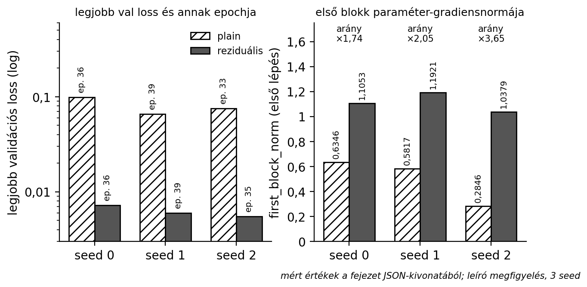

A 18.1. Reziduális blokk és identitásút alfejezetben levezettük a reziduális blokk rövidítését, a 18.3. Pre-activation, kis batch és alternatív normalizálás alfejezetben pedig a normalizáló rétegek tengelyválasztását és a pre-aktivációs elrendezést. Ebben az egységben azt a kérdést tesszük mérhetővé, amelyet a képlet önmagában nem dönt el: vajon a skip kapcsolat ténylegesen mérhető taníthatósági előnyt ad-e egy kis, ellenőrzött feladaton, vagy csak az adott recept szerencséje? Az ehhez szükséges eszköz az ablatív vizsgálat.
Előismeret: a 17.4. Architektúra összehasonlítása kontrollált keretben alfejezetből a kontrollált összehasonlítás kerete, a 6.4. Momentum és adaptív optimizálók alfejezetből az AdamW frissítési szabálya, a 18.3. Pre-activation, kis batch és alternatív normalizálás alfejezetből a BatchNorm train/eval viselkedése és a blokkok sorrendje. Induló becslés: ha a plain háló minden rétege kicsiny Jacobi-normával továbbítja a hibát, a korai rétegek gradiense eltűnik; a reziduális út ezt a szorzást megkerüli. A kérdés az, hogy ez a lokális érvelés a tényleges tanítási görbén is látszik-e.
Definíció (abláció). Az ablatív vizsgálat (ablation study) olyan kísérlet, amelyben egy architektúra vagy tanítási recept egyetlen komponensét távolítjuk el vagy cseréljük ki, a többi döntést változatlanul hagyva, és a változatokat ugyanazon a protokollon mérjük össze.
Definíció (matched recipe). A matched recipe olyan kontroll, amelyben a vizsgált tényezőn kívül minden tanítási döntés azonos: ugyanaz az adat és split, súlyinicializálás, seed-készlet, optimizer és súlycsökkentés, tanulási ráta és ütemezés, batchméret, epochszám, checkpoint-választási szabály és végső tesztelési eljárás. A 17.4. Architektúra összehasonlítása kontrollált keretben ottani állításának közvetlen alkalmazásaként a költségkeretet a kutatási kérdéshez kell igazítani: mivel a shortcut paramétermentes összeadás, a paraméterkeret itt automatikusan egyezik; emellett a számítási keret is közel azonos. A MAC (multiply–accumulate, szorzás–összeadás) műveletszámban egy konvolúció kernellel, kimeneti méreten MAC; a blokkban két ilyen konvolúció van, ehhez képest a reziduális összeadás művelet, azaz a konvolúciós költség hányada, ami , mellett elhanyagolható.
A vizsgált faktor tehát egy bináris változó:
A plain blokk
a reziduális blokk pedig
ahol a blokk bemeneti aktivációja ( a csatornaszám, és a térbeli kiterjedés), pedig a blokk konvolúciós és normalizációs paramétereit jelöli (így elkerüljük, hogy a súlyok jele összekeveredjen a térbeli szélességgel). A GlyphLab-hálóban (a függelék A. A GlyphLab adatkészlet szakasza szerinti adaton) a térbeli méret és a csatornaszám blokkon belül állandó, ezért az identitás-shortcut közvetlenül használható; vetítő-shortcutra most nincs szükség.
A kísérleti egység a GlyphLab scene_id-ja: egy jelenet két nézete ugyanabba a splitbe kerül, a bootstrap és az aggregálás ezért scene-szintű (5.4. Függő képek, seedek és resampling). A splitet a GlyphLab adatleírása (specifikációja, A. A GlyphLab adatkészlet) rögzíti: 120/30/30 jelenet train/val/test, osztályonként kiegyenlítve.
A kísérlet előtt rögzítjük a cáfolható hipotéziseket:
Döntési szabály. A szabályt a futás előtt rögzítjük.
H1 esetén a három seed páros first_block_norm arányát
(reziduális/plain) tekintjük: a hipotézist akkor tekintjük
támogatottnak, ha mindhárom seednél az arány nagyobb 1-nél, és az
arányok átlaga is nagyobb 1-nél; ellenkező esetben az eredményt leíró
megfigyelésként jelentjük, nem igazolt mechanizmusként. H2 esetén minden
seedre és minden validációs jelenetre kiszámítjuk a két modell átlagos
veszteségét, képezzük a jelenetszintű páros különbséget,
(seed
,
validációs jelenet
;
negatív érték a reziduális előnye), és a jeleneteken 95%-os bootstrap
konfidenciaintervallumot számolunk (23.3. Páros
összehasonlítás és csoportszintű intervallum); a hipotézist akkor
tekintjük támogatottnak, ha a három seed mindegyikében az intervallum
teljes egészében 0 alatt van. Ha valamelyik intervallum tartalmazza a
0-t, nem állítunk kimutatható különbséget; ha valamelyik teljes
egészében 0 felett van, a plain változat jobb ezen a futáson. Három seed
mellett nem „eloszlásról”, hanem három páros megfigyelésről beszélünk,
és a seedek közti szórást is jelentjük. A jelenetszintű veszteségeket a
lenti laborkód nem menti; a H2 kiértékeléséhez a validációs ciklust ki
kell egészíteni úgy, hogy a legjobb checkpointon jelenetenként
(scene_id) átlagolt veszteséget írjon a riportba, majd:
import numpy as np
def scene_bootstrap_ci(delta, n_boot=2000, seed=0):
"""delta: jelenetenkénti l_res - l_plain egy seedre; 95%-os percentilis-intervallum."""
rng = np.random.default_rng(seed)
delta = np.asarray(delta, dtype=np.float64)
idx = rng.integers(0, len(delta), size=(n_boot, len(delta)))
return np.percentile(delta[idx].mean(axis=1), [2.5, 97.5])A H1 egy lokális lineáris modellből vezethető le. Legyen a háló mélysége , a blokk kimenete , a skalár veszteség gradiense pedig , amelynek alakja megegyezik alakjával. A láncszabály szerint
ahol a blokk Jacobi-mátrixa. A plain blokkra . Olyan pontokban, ahol a ReLU-k aktív mintázata rögzített (és a BatchNorm adott batch-statisztikája mellett), a blokk lokálisan affin leképezés; a konvolúció linearitása (15.1. Súly- és biasgradiens) miatt a Jacobi az adott pontban a súlyokból és a BN-statisztikából számítható. Ez lokális és feltételes állítás: a ReLU-minta változása és a BN batchfüggése miatt a Jacobi pontról pontra változik, ezért a továbbiakban csak azt tesszük fel, hogy létezik felső korlát minden rétegre.
Lemma (eltűnő gradiens a plain láncban, lokális lineáris közelítés). Ha minden rétegre , akkor a plain hálóra
Bizonyítás. Indukcióval: , amit -szer alkalmazva kapjuk az állítást.
A reziduális blokkra , ezért differenciálható pontban
tehát a backward lépés
Az upstream gradiens tehát változatlanul megjelenik a kimenő gradiensben: az identitásút minden blokkban hozzáadja a head felől érkező hibát. A teljes szorzat
ahol a szorzat minden tagja tartalmazza az összeadandót. Ha , akkor ez a szorzat alakú, ahol az maradék konstansa -től függ (a másod- és magasabb rendű tagok száma -nel nő), ezért a becslés rögzített mellett érvényes; a head-gradiens nem kényszerül kizárólag kicsiny Jacobi-tényezőkön áthaladni. Ha viszont , akkor minden legkisebb szinguláris értéke legalább , így alsó korlát van; ez azonban nagy vagy mellett gyenge (a kioltás csak ezen feltétel mellett zárható ki). A plain eset felső, a reziduális eset alsó korlát, ezért a kettő közvetlenül nem hasonlítható össze; az állítás csak annyit mond, hogy a reziduális gradiens nem csillapodik alá, míg a plain legfeljebb -ig csökken. Az állítás lokális lineáris közelítésből levezetett heurisztikus mechanizmus, nem globális konvergencia- vagy optimalizálási tétel. A H1 mérési célja éppen az, hogy ezt a mechanizmust empirikusan ellenőrizze, nem pedig az, hogy általános tételként igazolja.
Legyen , skalár közelítésben differenciálható pontban, , és a head-gradiens . A plain láncra
a reziduálisra
Ugyanazokkal a blokkparaméterekkel a korai réteg gradiense a reziduális esetben több mint harmincszorosa a plain értéknek. A példa a lemmát illusztrálja, de nem helyettesíti: valódi hálóban a ReLU-k aktív mintázata lépésenként változik, és a Jacobi-norma feltételét nem ellenőriztük. Fontos, hogy ez a példa a lemma egyenlőségi esete: a lineáris és mellett minden blokkra, ezért a plain becslésben egyenlőséggel teljesül, nem csak felső korlátként. A reziduális alsó korlát itt nem éles, mert a tényleges érték felett van. Nemlineáris hálóban a becslés általában nem éles.
Előfeltétel. Python 3.12 és a cnn-labor
csomag rögzített környezete (uv sync: NumPy 2.3.5, PyTorch
2.14.1+cpu; a közölt kimenetek a könyv ellenőrző környezetéből, NumPy
2.5.4 és PyTorch 2.15.0+cpu alatt készültek), CPU; a labor a szakasz
kódját használja, a szükséges csomagokat a laborcsomag rögzített
környezete biztosítja. Bemenet a GlyphLab
lab/data/images.npy, labels.npy,
metadata.csv és corrupted_test.npy fájlja; a
n072_resablation.py futtatható
(python n072_resablation.py).
A labor a GlyphLab háromosztályos orientációfeladatát használja (13.1. Kép mint diszkrét többcsatornás jel, 25.1. Teljes képosztályozó adatfolyam). A bemenet float32 NCHW , a cél int64 ; a modell logitot ad, CrossEntropyLoss előtt nincs softmax ([D07]).
Az adatfájlok szerkezete (a függelék A. A
GlyphLab adatkészlet szakasza szerint): images.npy
alakja
,
float32, értékkészlet
;
labels.npy alakja
,
int64, az orientáció osztályindexe (0 = függőleges, 1 = vízszintes, 2 =
átlós); metadata.csv 360 rekordja az index (a
teljes képtömb sorindexe, nem a CSV sorszáma), a scene_id
(G<label>-<scene> alakú string), a
view_id, a label, a split és a
befoglaló doboz koordinátáit tartalmazza;
corrupted_test.npy a 60 tesztkép rontott változata a
metadata test-sorainak sorrendjében. A labor a metadata.csv
index és split oszlopára támaszkodik, ezért
nem függ a fájlok fizikai sorrendjétől.
Protokoll (a futás előtt rögzítendő). Változó
faktor:
.
Rögzített: GlyphLab split, seedek
,
AdamW
,
(6.4. Momentum és adaptív optimizálók), batch
64, 40 epoch, best checkpoint = legkisebb val loss, a teszt csak a
checkpoint kiválasztása után. A clean teszt a test split 60 képét, a
corrupt teszt ugyanezen jelenet–nézet párok rontott változatát
(corrupted_test.npy) jelenti; a páros kiértékelés
részleteit a 38.3. Végső teszt és páros
korrupció tárgyalja. A BatchNorm train alatt batch-statisztikát,
eval alatt futó puffert használ [D12]; a réteg bevezetésének
motivációját és hatásvizsgálatát a [P07], illetve a [P08] tárgyalja. A
mérést model.eval() módban végezzük.
Az architektúra: stem (a háló bemenetet feldolgozó első konvolúciója) Conv(, , pad=1), öt blokk, head (a klasszifikációs kimenetet adó fej) AdaptiveAvgPool2d(1) és Linear(). Minden blokk két Conv(, , pad=1, bias=False) réteget, két BatchNorm2d(16) réteget és ReLU-kat tartalmaz; a reziduális változat a második BN után hozzáadja a bemenetet, majd ReLU következik (poszt-aktivációs blokk a 18.3. Pre-activation, kis batch és alternatív normalizálás jelölésével). A paraméterszám mindkét változatra:
| Rész | Számítás | Paraméter |
|---|---|---|
| Stem Conv | 160 | |
| Egy blokk | 4672 | |
| Head Linear | 51 | |
| Öt blokkal összesen | 23 571 |
A labor kódja a lab/ munkakönyvtárban:
# lab/n072_resablation.py
# Futtatás bárhonnan: python n072_resablation.py --epochs 40 --seeds 0 1 2
# Az adat alapértelmezésben a script melletti data/ könyvtár.
import argparse, json, pathlib
import numpy as np
import torch
import torch.nn as nn
BASE = pathlib.Path(__file__).resolve().parent
def make_block(ch, residual):
class Block(nn.Module):
def __init__(self):
super().__init__()
self.conv1 = nn.Conv2d(ch, ch, 3, padding=1, bias=False)
self.bn1 = nn.BatchNorm2d(ch)
self.conv2 = nn.Conv2d(ch, ch, 3, padding=1, bias=False)
self.bn2 = nn.BatchNorm2d(ch)
self.residual = residual
def forward(self, x):
h = self.bn1(self.conv1(x)).relu()
h = self.bn2(self.conv2(h))
if self.residual:
h = h + x
return h.relu()
return Block()
class Net(nn.Module):
def __init__(self, blocks=5, ch=16, residual=True, num_classes=3):
super().__init__()
self.stem = nn.Conv2d(1, ch, 3, padding=1)
self.blocks = nn.Sequential(*[make_block(ch, residual) for _ in range(blocks)])
self.head = nn.Sequential(
nn.AdaptiveAvgPool2d(1), nn.Flatten(), nn.Linear(ch, num_classes))
def forward(self, x):
return self.head(self.blocks(self.stem(x).relu()))
def grad_norm(modules):
sq = 0.0
for m in modules:
for p in m.parameters():
if p.grad is not None:
sq += p.grad.detach().float().pow(2).sum().item()
return float(np.sqrt(sq))
def evaluate(model, X, y, loss_fn, device):
model.eval()
with torch.no_grad():
logits = model(X.to(device))
return (loss_fn(logits, y.to(device)).item(),
(logits.argmax(1) == y.to(device)).float().mean().item())
def main():
ap = argparse.ArgumentParser()
ap.add_argument("--data", type=pathlib.Path, default=BASE / "data")
ap.add_argument("--epochs", type=int, default=40)
ap.add_argument("--seeds", nargs="+", type=int, default=[0, 1, 2])
ap.add_argument("--device", default="cpu")
args = ap.parse_args()
imgs = np.load(args.data / "images.npy").astype(np.float32)
labels = np.load(args.data / "labels.npy").astype(np.int64)
meta = np.genfromtxt(args.data / "metadata.csv", delimiter=",", dtype=None,
names=True, encoding="utf-8")
# A sorrendre nem támaszkodunk: a saját index oszlopa adja a tömbindexet.
if not (len(meta) == len(imgs) == len(labels)):
raise ValueError("a metadata.csv és a tömbök hossza eltér")
idx_all = meta["index"].astype(np.int64)
if not np.array_equal(np.sort(idx_all), np.arange(len(imgs))):
raise ValueError("a metadata.csv index oszlopa nem permutációja a tömbindexeknek")
split = np.asarray(meta["split"]).astype(str)
train_idx = torch.tensor(idx_all[split == "train"], dtype=torch.long)
val_idx = torch.tensor(idx_all[split == "val"], dtype=torch.long)
test_idx = torch.tensor(idx_all[split == "test"], dtype=torch.long)
X = torch.from_numpy(imgs)
y = torch.from_numpy(labels)
Xco = torch.from_numpy(
np.load(args.data / "corrupted_test.npy").astype(np.float32))
if len(Xco) != len(test_idx):
raise ValueError("a corrupt teszt hossza nem egyezik a test splittel")
# A corrupt teszt a metadata.csv test sorainak sorrendjében van
# (manifest.json: corrupt_order), ezért a test_idx pozícióihoz párosul.
device = torch.device(args.device)
loss_fn = nn.CrossEntropyLoss()
assert sum(p.numel() for p in Net(residual=False).parameters()) == 23571
assert sum(p.numel() for p in Net(residual=True).parameters()) == 23571
report = {}
for seed in args.seeds:
for residual in (False, True):
# A matched recipe és a H1 azonos kezdeti súlyokat kíván: minden
# modell ugyanabból a seedből indul, ezért az init és a shuffle
# sorrendje a két ágban azonos.
torch.manual_seed(seed)
model = Net(residual=residual).to(device)
opt = torch.optim.AdamW(model.parameters(), lr=1e-3, weight_decay=1e-4)
best_val = float("inf")
best_epoch = -1
best_state = None
history = {"first_step": None, "epochs": []}
act_grad = {}
def first_block_hook(module, inp, out):
out.register_hook(
lambda g: act_grad.__setitem__(
"norm", g.detach().float().norm().item()))
hook = model.blocks[0].register_forward_hook(first_block_hook)
for ep in range(args.epochs):
model.train()
order = torch.randperm(len(train_idx))
train_loss_sum = 0.0
n_batches = 0
for st in range(0, len(train_idx), 64):
idx = order[st:st+64]
xb = X[train_idx[idx]].to(device)
yb = y[train_idx[idx]].to(device)
opt.zero_grad()
loss = loss_fn(model(xb), yb)
loss.backward()
if ep == 0 and st == 0:
history["first_step"] = {
"step": 0,
"stem_norm": grad_norm([model.stem]),
"first_block_norm": grad_norm([model.blocks[0]]),
"first_block_act_grad_norm": act_grad.get("norm", 0.0),
"last_block_norm": grad_norm([model.blocks[-1]]),
"head_norm": grad_norm([model.head]),
}
hook.remove()
opt.step()
train_loss_sum += loss.item()
n_batches += 1
val_loss, val_acc = evaluate(model, X[val_idx], y[val_idx],
loss_fn, device)
history["epochs"].append({
"epoch": ep, "train_loss": train_loss_sum / n_batches,
"val_loss": val_loss, "val_acc": val_acc})
if val_loss < best_val:
best_val = val_loss
best_epoch = ep
best_state = {k: v.detach().clone()
for k, v in model.state_dict().items()}
ckpt = args.data.parent / (
f"n072_seed{seed}_{'residual' if residual else 'plain'}.pt")
torch.save(best_state, ckpt)
model.load_state_dict(best_state)
test_loss, test_acc = evaluate(model, X[test_idx], y[test_idx],
loss_fn, device)
corrupt_loss, corrupt_acc = evaluate(model, Xco, y[test_idx],
loss_fn, device)
report[f"seed{seed}_{'residual' if residual else 'plain'}"] = {
"param_count": sum(p.numel() for p in model.parameters()),
"checkpoint": ckpt.name,
"best_val_loss": best_val,
"best_epoch": best_epoch,
"test_loss": test_loss,
"test_acc": test_acc,
"corrupt_loss": corrupt_loss,
"corrupt_acc": corrupt_acc,
"first_step": history["first_step"],
"epochs": history["epochs"],
}
out = args.data.parent / "n072_report.json"
out.write_text(json.dumps(report, indent=2))
print(out)
if __name__ == "__main__":
main()A kód szándékosan minimális: saját indexelésű batch-képzést használ
DataLoader helyett, a legjobb validációs checkpointot
viszont ténylegesen menti, a tesztkiértékelést pedig a 11.4. Egy teljes PyTorch tanítási iteráció és 12.2. Checkpoint és folytathatóság receptjét
követve csak a kiválasztás után végzi. Futásidő-tervezés: a 240 képes
train split batch 64 mellett epochonként 4 lépést ad, így 40 epoch és 6
futás összesen 960 lépés; a mért futásidő ezzel arányos, gépenként és
szálszámtól függően eltérhet. A labor beadandó
eredménye: a n072_report.json nyers epochonkénti
és lépésenkénti adatai, a mentett checkpointok, valamint a
tesztkiértékelés a kiválasztott checkpointokon. Az alábbi kivonat a
rögzített környezetű ellenőrző futás (Python 3.12.3, NumPy 2.5.4,
PyTorch 2.15.0+cpu, CPU, 1 szál, seedek 0, 1, 2; a futás mért ideje kb.
1 m 22 s) tényleges n072_report.json fájljából származik. A
számok négy tizedesre kerekítettek; a teljes fájl seedenként 40 epoch
rekordját és a first_step minden gradiensnormáját
tartalmazza:
{"seed0_plain": {"best_val_loss": 0.0988, "best_epoch": 36,
"test_acc": 1.0, "corrupt_acc": 0.6833,
"first_step": {"first_block_norm": 0.6346, "head_norm": 0.1977}},
"seed0_residual": {"best_val_loss": 0.0072, "best_epoch": 36,
"test_acc": 1.0, "corrupt_acc": 0.6,
"first_step": {"first_block_norm": 1.1053, "head_norm": 0.5606}},
"seed1_plain": {"best_val_loss": 0.0655, "best_epoch": 39,
"test_acc": 1.0, "corrupt_acc": 0.8667,
"first_step": {"first_block_norm": 0.5817, "head_norm": 0.4454}},
"seed1_residual": {"best_val_loss": 0.0060, "best_epoch": 39,
"test_acc": 1.0, "corrupt_acc": 0.4333,
"first_step": {"first_block_norm": 1.1921, "head_norm": 1.8687}},
"seed2_plain": {"best_val_loss": 0.0752, "best_epoch": 33,
"test_acc": 1.0, "corrupt_acc": 0.95,
"first_step": {"first_block_norm": 0.2846, "head_norm": 0.2701}},
"seed2_residual": {"best_val_loss": 0.0055, "best_epoch": 35,
"test_acc": 1.0, "corrupt_acc": 0.7167,
"first_step": {"first_block_norm": 1.0379, "head_norm": 1.6064}}}A mért adatokban a reziduális változat mindhárom seednél alacsonyabb
legjobb validációs losszt ért el, és a first_block_norm is
mindhárom seednél nagyobb volt, mint a plain változatban. A clean teszt
pontosság mind a hat futásban
lett, ezért a tesztkészlet ezen a méreten nem különbözteti meg a
modelleket; a corrupt teszt pontossága viszont seedenként és
változatonként jelentősen szór. Ebben a futásban a corrupt teszt
pontossága mindhárom seednél a plain változatban volt magasabb
(
vs. ;
vs. ;
vs. ),
ami a reziduális változat nagyobb zajérzékenységére utal ezen a kis
adaton; ez egy három seeddel végzett futás megfigyelése, nem általános
törvény. A tanulói futás ezekkel a számokkal összevethető; a lényeg a
kiválasztási protokoll betartása, nem a fenti értékek betű szerinti
reprodukálása. A három seed kis minta: a páros különbségekre
scene-szintű bootstrap 95%-os konfidenciaintervallumot kell számítani
(23.3. Páros összehasonlítás és csoportszintű
intervallum), és a fenti számok ennek hiányában csak leíró
megfigyelésnek tekinthetők.
A fenti JSON-kivonat értékeit az alábbi ábra seedenként párosítva
mutatja. Epochonkénti tanulási görbét a kivonat nem tartalmaz; azt a
saját futás n072_report.json fájljának
epochs[].val_loss mezőjéből lehet kirajzolni.

Az értékelés három szinten történik. (1) A H1-et a
first_block_norm (paraméter-gradiens) és a
first_block_act_grad_norm (aktivációgradiens)
plain/reziduális arányával ellenőrizzük; a stem, az utolsó blokk és a
head normája külön mező, ezeket nem vonjuk össze. A várakozás a
levezetett irány, de a mérés lehet ellentétes is. (2) A H2-höz a három
seed páros best-val-loss különbségét jelentjük (seedenként és átlagban);
három seed mellett ez nem eloszlás, hanem három páros megfigyelés, ezért
a bizonytalanságot a scene-szintű bootstrap adja, és a legjobb seedet
nem válogatjuk ki. (3) A végső tesztkiértékelés után közöljük a clean
teszt pontosságát és szükség esetén a corrupt páros különbséget.
A negatív eredmény kifejezetten megengedett: ha a GlyphLab feladat 24×24 pixelen öt blokkal is könnyű, a két változat val lossza nem különül el. Ez nem cáfolja a [P06] nagyléptékű eredményét, és nem igazolja, hogy a skip minden feladaton hasznos; mindössze annyit állít, hogy ezen az adaton, ezzel a recepttel a különbség nem kimutatható. A következtetés érvényességi köre ezért a protokollal együtt rögzített: GlyphLab, 360 kép, 23 571 paraméter, CPU, három seed.
A leggyakoribb hiba az, hogy a kis ablatív kísérlet eredményét az eredeti ResNet-publikáció reprodukciójaként vagy általános architektúraigazságként olvassuk. A [P06] 3.1–3.2 szakasza az blokkot definiálja; a cikk állításai azonban ImageNet/COCO léptékű, nagyságrendekkel nagyobb hálókra és adatokra vonatkoznak. Illusztráció (nem matematikai ellenpélda): ha a fenti laborban a plain háló véletlenül jobb val losszt ér el, az nem azt jelenti, hogy „a skip kapcsolat hibás”, hanem hogy a mérési környezetben a H2 nem igazolódott. A skála és az adat különbözősége miatt a két állítás nem ütközik.
F1 (fogalmi, nehézség 1). Magyarázza el, miért nem ablatív vizsgálat, ha a plain hálót -mal, a reziduálist pedig -szal tanítjuk, és közben azt állítjuk, hogy a skip gyorsította a tanulást. Adjon egy olyan ellenőrzést, amely ezt a hibát kizárja.
F2 (levezetési, nehézség 2). Számítsa ki a fenti labor hálójának paraméterszámát, és igazolja, hogy a plain és reziduális változat paraméterkerete egyezik. Ezután a skalár példában mellett adja meg a plain és a reziduális értékét, és ellenőrizze a lemma exponenciális becslését.
F3 (implementációs, nehézség 2). Írjon egy
norm_probe függvényt, amely egy Net modellen
az első forward-backward lépés után visszaadja a stem, az első blokk, az
utolsó blokk és a head gradiensnormáit. Az input alakja
legyen, dtype float32, device CPU; a függvény a modell paraméterein
iterál, és None gradiensre
-t
ad.
F4 (hibakeresési, nehézség 2). A labor korai
változatában a ciklus mindig Net(residual=True)-ot
konstruált, mert a residual ciklusváltozó nem került át a
konstruktorba, miközben a riport kulcsa (seedX_plain vagy
seedX_residual) a ciklusváltozó értéke szerint készült. Mi
a hiba következménye a H2 kiértékelésére, és milyen naplóbejegyzéssel
lehet ezt a hiba detektálása után visszamenőleg kimutatni?
F5 (kísérleti/transzfer, nehézség 3). Tervezzen depth-sweep kísérletet 3, 5 és 7 blokkal annak eldöntésére, hogy a skip előnye a mélységgel nő-e a GlyphLabon. Adja meg a nullhipotézist, a rögzített erőforráskeretet, a metrikát, a seed- és scene-szintű kiértékelést, valamint a következtetés legalább egy érvényességi korlátját. A beadandó terv kötelező elemei: hipotézis, a változó tényező, kontroll (baseline), metrika és megfigyelési egység, a seedek száma és konkrét értékei, számszerű döntési szabály, valamint erőforráskeret.
F1 megoldás. Az eltérő tanulási ráta két faktor
együttes változtatása, ezért a mért különbséget nem lehet kizárólag a
skipnek tulajdonítani. Az ellenőrzés: ugyanazt a seed-készletet és AdamW
konfigurációt mindkét ágon futtatjuk, a kód pedig a
manifestbe írja az lr, a
residual és a modell-paraméterszám értékét; a manifestet a
kiértékelés előtt összevetjük. A manifest itt a futás géppel olvasható
konfigurációs és eredmény-naplója (JSON), amely a splitet, a seedet, az
lr-t, a weight decay-t, a batchméretet, az epochszámot, a
residual tényleges értékét és a paraméterszámot rögzíti; a
laborban ezt a n072_report.json és a hozzá tartozó
futáskonfiguráció tölti be.
F2 megoldás. A stem: . Egy blokkban a Conv bias=False, ezért súlyonként, két konvolúció ; a két BatchNorm2d párja külön-külön , együtt ; összesen blokkonként . Öt blokk , a head . Összesen . A shortcut add-nak nincs paramétere, tehát a budget egyezik. A skalár példában plain: ; reziduális: . A lemma a plain esetre , , az egyenlőség teljesül, mert a példa lineáris.
F3 megoldás. A Net osztály a fenti
labor kódjából származik (lab/n072_resablation.py); az
alábbi függvény csak a gradiensnormákat méri, ezért optimalizáló példány
nem kell hozzá.
def norm_probe(model, xb, yb):
loss_fn = torch.nn.CrossEntropyLoss()
model.train()
model.zero_grad(set_to_none=True)
loss_fn(model(xb), yb).backward()
def norm(modules):
s = 0.0
for m in modules:
for p in m.parameters():
if p.grad is not None:
s += p.grad.detach().pow(2).sum().item()
return s ** 0.5
return {
"stem": norm([model.stem]),
"first_block": norm([model.blocks[0]]),
"last_block": norm([model.blocks[-1]]),
"head": norm([model.head]),
}
x = torch.randn(2, 1, 24, 24, dtype=torch.float32, device=torch.device("cpu"))
y = torch.tensor([0, 1], dtype=torch.int64)
model = Net(residual=True)
print(norm_probe(model, x, y))Alakellenőrzés: a bemenet NCHW ; a head logitja , a CrossEntropyLoss int64 célt vár. A kimeneti gradiensek skalárok, így a visszaadott értékek mindig nemnegatív valós számok.
F4 megoldás. Ha mindkét ág reziduális, a H2
összehasonlítás triviálisan azonos eloszlást mér, és a plain-ként
naplózott eredmény valójában a reziduális modellé. A
state_dict kulcsainak száma ezt nem mutatja ki: a
residual kapcsoló csak a forward útját változtatja,
paramétert nem ad hozzá, így a két ág kulcskészlete azonos.
Visszamenőleges detektálás: azonos seedű „plain” és „residual”
rekordok teljes egyezése (különösen a first_block_norm,
amely a plain és a reziduális láncnál eltér) jelzi a hibát.
Megelőzés: a riportba minden futásnál bekerül a blokkok
tényleges residual mezője
([b.residual for b in model.blocks]) és a konfiguráció, a
script pedig a futás elején
assert all(b.residual == residual for b in model.blocks)
ellenőrzést hajt végre; hibás konstrukciónál ez az assert azonnal
elbukik.
F5 megoldás. Nullhipotézis: a skip nélküli és a skipes háló best-val-loss különbsége nem változik a blokkszám függvényében. Rögzített keret: csatorna, AdamW , három seed, 40 epoch, batch 64. A paraméterszám a mélységgel nő, ezért a kérdéshez a mélységi keret a releváns; a MAC-értéket a 14.3. Paraméterszám, MAC és aktivációmemória szerint blokkonként kell kiszámítani és a riportba írni: a stem MAC, egy blokk MAC (a BN és a ReLU költsége ezen felül, külön naplózandó), a head AdaptiveAvgPool és Linear költsége ehhez képest elhanyagolható. Metrika: a validációs loss szolgál a checkpoint kiválasztására, a jelentett érték a validációs accuracy és a loss. A bizonytalanságot a validációs predikciók scene-szintű bootstrapja adja: a jelenetek újramintavételezésével a páros val-loss-különbség átlagára számolunk 95%-os konfidenciaintervallumot; a tesztet erre nem használjuk, a teszten csak egyszeri pontbecslést (és szükség esetén külön jelölt, leíró intervallumot) adunk. A tesztet csak a három mélység és a két skip-változat best checkpointjainak kiválasztása után értékeljük. Érvényességi korlát: a GlyphLab kis mérete miatt a 7 blokkos háló is csak paraméteres marad (kerekítve 33 ezer), így az eredmény nem vihető át mély ImageNet-osztályú hálókra.
Kötelező elemek kiegészítve. Seedek: 20261020, 20261021,
20261022 (minden karra azonosak). Döntési szabály (előre rögzítve): a
kezelt változatot csak akkor tekintjük jobbnak, ha az elsődleges metrika
seedenként párosított különbségének jelenetszintű bootstrap 95%-os
intervalluma
(,
np.random.default_rng(0)) teljesen a javulás oldalán van;
különben nem állítunk különbséget.
A képletekben az indexhatárok ellenőrizve:
,
a head felől érkező gradiens. Az add a reziduális blokkban
csak akkor definiált, ha a csatorna- és térbeli alak egyezik; a laborban
a stride 1 és a pad 1 ezt biztosítja. A plain és reziduális
paraméterszám levezetése a bias=False konvenciót követi; a BN
paraméterei mindkét ágban azonosak. A gradiensnormák a gradiensvektor
L2-normái: a négyzetösszeg a gradienskomponensek (nem a paraméterek)
felett képződik, majd négyzetgyököt vonunk; a grad_norm
függvény ezt a p.grad tenzorokon számolja, nem a
paraméterértékeken. A loss átlagolása a batchre vonatkozik, a
gradiensnorma mérése ebből a skálából származó torzítást hordozhat,
ezért a labornak azonos batchméretet kell használnia. Ismétlés a 17.4. Architektúra összehasonlítása kontrollált
keretben alfejezetből: az egyeztetendő keretet a kérdéshez
választjuk; a 18.3. Pre-activation, kis batch és
alternatív normalizálás alfejezetből: a pre-aktivációs blokk a
shortcutra nem tesz normalizálást; a 6.4. Momentum
és adaptív optimizálók alfejezetből: az AdamW súlycsökkentése
decoupled, ezért az L2-tagot nem a lossba írjuk.
Az ablatív vizsgálat egyetlen tényezőt változtat, a matched recipe minden más döntést rögzít: adat, split, seed, optimizer, ütemezés, checkpoint- és tesztszabály. A skip kapcsolat hatását a plain és a reziduális blokk azonos paraméterkeretű összehasonlításával izoláljuk. A backward levezetés szerint a plain lánc a Jacobi-normák szorzatával skáláz, a reziduális láncban az identitás az upstream gradienst változatlanul továbbítja. A labor ötblokkos GlyphLab-hálón méri a best-val-loss eloszlást és az első lépés gradiensnormáit; a mérési állítás érvényessége erre a kis környezetre korlátozódik, és a negatív eredmény is közölhető.
A 19.1. Depthwise separable és pointwise réteg a depthwise separable konvolúciót vezeti be: ott ismét ablációval választjuk szét a spatial és a pointwise rész hatását, és a most bevezetett matched-recipe naplózást használjuk a paraméter/MAC-keret igazolására.